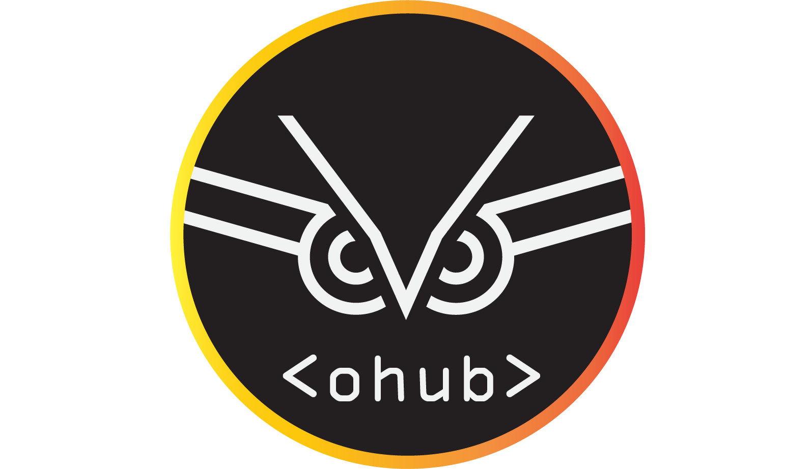

<section id="leader-boards">
  <div class="row">
    <div class="col-4 text-center">
      <app-contributors-leaderboard theme="header-aqua-1" type="repos"></app-contributors-leaderboard>
    </div>
    <div class="col-4 text-center" dir="rtl">
      <br>
      <br><br>
      <h3>כבר תרמת.. לקוד פתוח ביחידה?</h3>
      <h5>האתר נוצר במטרה לתת למפתחים באופק אינדיקציה לגבי כמות תרומת הקוד שלהם לפרויקטים, ולייצר גיימיפיקציה עבור
        הפיתוח
        ביחידה</h5>
    </div>
    <div class="col-4 text-center">
      <app-contributors-leaderboard theme="header-aqua-2" type="commits"></app-contributors-leaderboard>
    </div>
  </div>
  <div class="row">
    <div class="col-6 text-center">
      <app-repos-leaderboard theme="header-goldy-1" type="contributors"></app-repos-leaderboard>
    </div>
    <div class="col-6 text-center">
      <app-repos-leaderboard theme="header-goldy-2" type="commits"></app-repos-leaderboard>
    </div>
  </div>
  <span id="leader-boards-second"></span>
</section>
<section id="repos-table">
  <div class="row">
    <div class="col-10 offset-1">
      <app-card-header theme="header-gold" faIcon="fab fa-codepen fa-3x" title="כל מאגרי הקוד" description="לפי תורמים"
                       ></app-card-header>
      <app-repos-table></app-repos-table>
    </div>
  </div>
</section>

<section id="repos-graphs">
  <div class="row">
    <div class="col-10 offset-1">
      <app-card-header faIcon="fas fa-chart-pie fa-3x" title="סטטיסטיקות" description="כלליות"
                       theme="header-blue"></app-card-header>
      <div class="col-10 offset-2">
        <app-graphs></app-graphs>
      </div>
    </div>
  </div>
</section>

<div class="col-12">
  <app-scroll-button [scrollTargets]="['leader-boards', 'leader-boards-second' ,'repos-table', 'repos-graphs']"
                     [scrollDuration]="300"></app-scroll-button>
</div>
